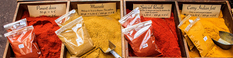

Curried Chicken in Coconut Milk
Thai curries are quick & easy to prepare, especially now that most supermarkets
sell authentic ready-made curry pastes flavoured with chilli, ginger, garlic, lemon grass & spices.
Serves 4-6
Ingredients:
- 1 tablespoon sunflower oil
- 4 skinless chicken breast fillets, sliced
- 1 large onion, finely chopped
- 2 garlic cloves, finely chopped
- 1 tablespoon freshly grated root ginger
- 1 large red pepper, deseeded and chopped roughly
- 3 carrots, peeled and chopped roughly
- 2 tablespoons Thai red curry paste
- 1/2 pint (300 ml) chicken stock
- 14 oz (400g) can coconut milk
- 2 tablespoons caster sugar
- good pinch salt
- juice of 1 lime
- chopped fresh coriander leaves, to garnish
- Thai fragrant or basmati rice, to serve
Method:
- Heat a wok until very hot. Add the oil and heat until it is almost smoking, swirling around the sides.
Tip in the chicken breast and cook for a few minutes, until lightly browned.
- Add the onion, garlic and ginger to the wok and cook for another 3-4 minutes , until softened. Add the red pepper and carrot.
Stir in the curry paste and cook for 2 minutes, stirring continuously. Pour in the chicken stock and coconut milk and bring to
a gentle simmer. Stir in the sugar.
- Add enough lime juice to taste and simmer gently for 10-15 minutes, until the sauce has slightly reduced and the chicken
is completely tender.
- To serve, divide among warmed wide-rimmed bowls & sprinkle over the coriander, then serve with the Thai fragrant or basmati rice
